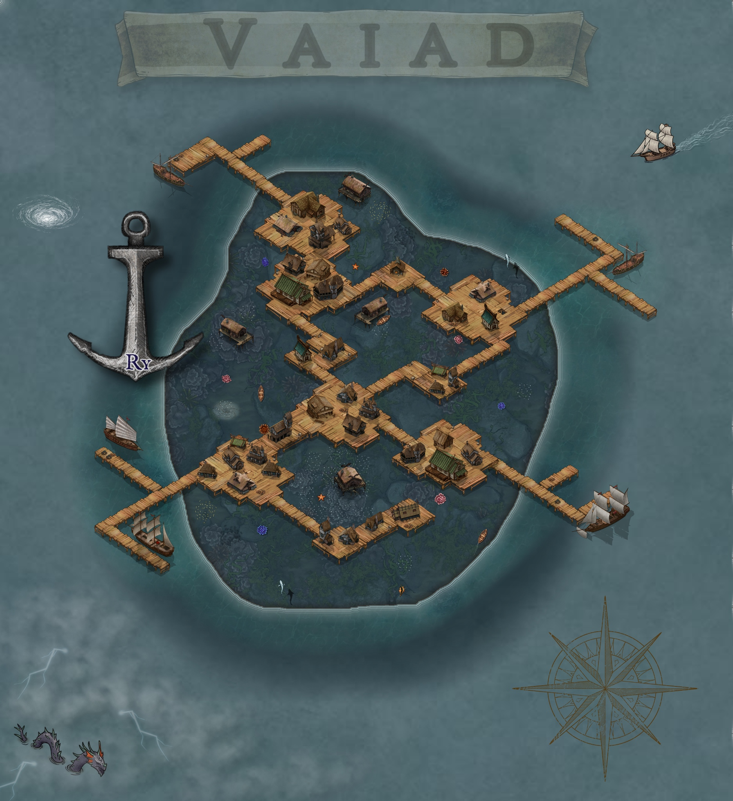
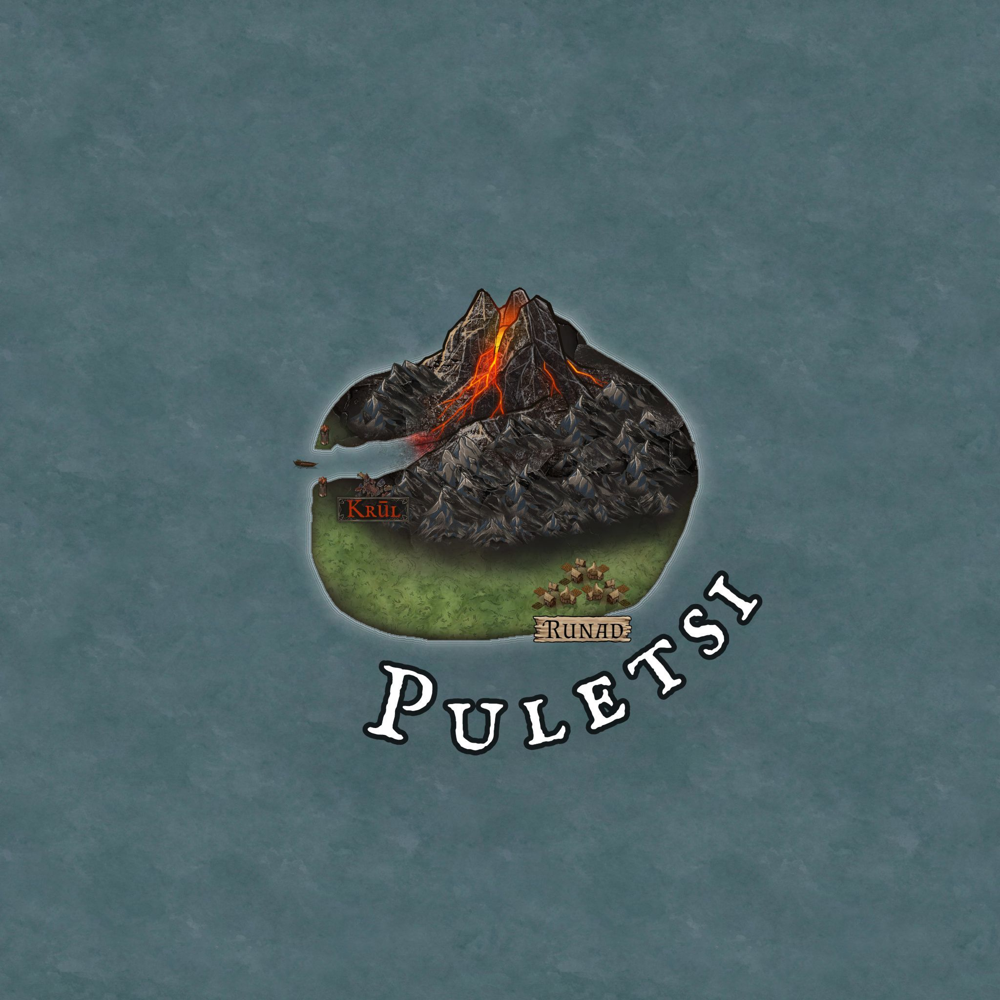
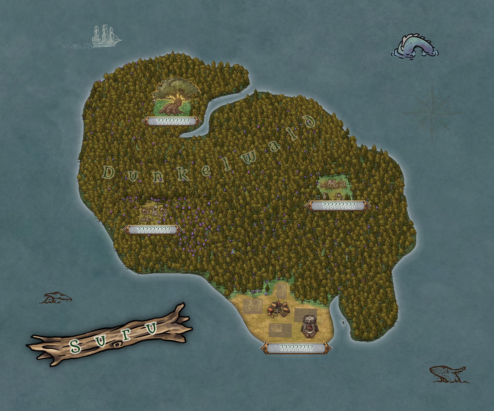
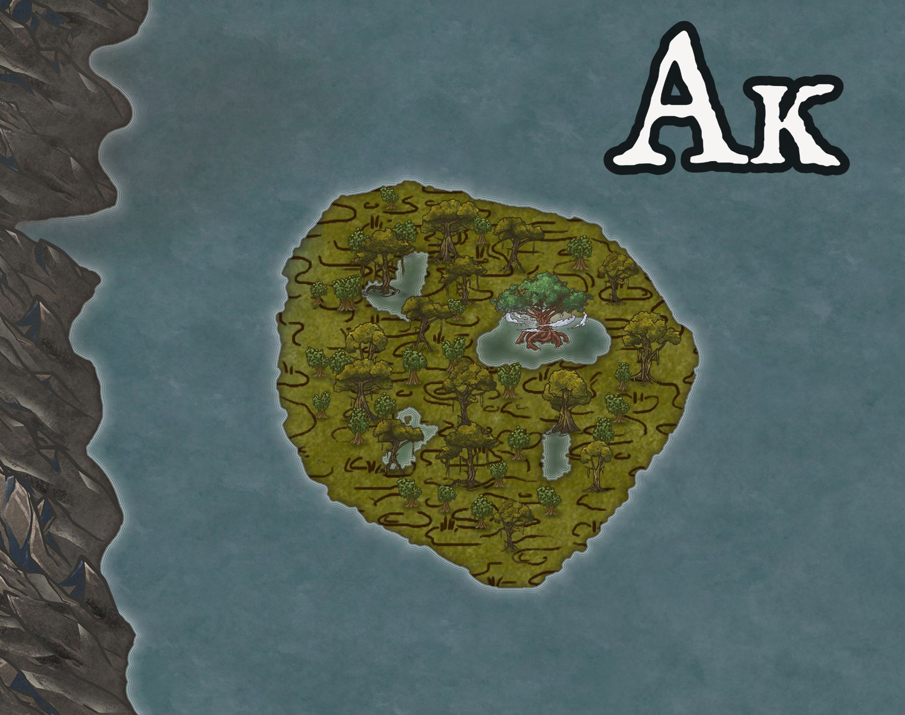

Inseln
Die freien Inseln, die keinem Kontinent zugeordnet werden.
Vaiad

Vaiad liegt ca. zwei Meter unter der Wasseroberfläche. Heiße Quellen steigen von ihr auf.
Die Guqual nennen sie 'xa'ād'.
Ry
Ry ist eine sehr junge Stadt und befindet sich auf der Insel Vaiad.
Sie dient als Handelspunkt zwischen den großen Landmassen.
Da Vaiad allerdings nicht über den Meeresspiegel hinaus ragt, wurde die Stadt auf einem Holzgerüst gebaut, welches mit der Insel verankert ist.
Hier leben hauptsächlich Händler und kuriose Gestalten. Außerdem kursieren Gerüchte über einen riesigen Schwarzmarkt.
Da heiße Quellen von der Insel aufsteigen, gibt es hier einige Thermen.
Die Guqual nennen sie 'rūk'.
Puletsi

Insel der Guqual, die zwischenzeitlich von den
Drasken belagert wurde, was wiederum in einen
Krieg
mündete, der die Vertreibung der Drasken zur Folge hatte.
Der Großteil der Insel wird von einem Vulkan eingenommen. Im Westen der Insel führt eine Wasserschneise auf den Vulkan zu, flankiert von zwei Türmen.
Am Ufer der Schneise am Fuß des Vulkangebirges liegt die Guqual-Stadt Krūl. Im grüneren Süden der Insel haben die Drasken während ihrer Zeit in Puletsi
die Stadt Runad gegründet.
Suru

Diese Insel ist der Ursprung des Lebens in Suruthua, was auch in der ursprünglichen Bedeutung des Namens (rux: ðuru "Leben") zu finden ist.
Von hier aus zogen die Guqual einst los
und besiedelten nach und nach die ganze Welt. Die Guqual, die blieben, wurden im Laufe der Zeit zu den
Myzari.
Damit ist Suru Herkunftsland und letzter
Rückzugsort der Myzari.
Vereinzelte Ruinen brechen die sonst bestehende Einheit aus gewaltigen Bäumen.
Yok-ma
Yok-ma befindet sich auf dem Rücken des Yok, einer riesigen Wasserkreatur, die durch die Meere Suruthuas zieht. Sie wird von Amaka und einigen Auglingen bewohnt, die dort eine ganze Stadt errichtet haben. Die Gebäude wurden mit Hilfe des Augling-Sekrets am Körper des Yok befestigt. Die Stadt befindet sich meistens über der Wasseroberfläche, ist aber den Bewegungen des Yok ausgesetzt. mutualistischen Exosymbiose mit dem Yok. Sie füttern ihn regelmäßig mit Fischen und Meerespocken. Im Gegenzug taucht das Yok bei Unwetter so weit ab, dass die Bevölkerung vor Stürmen geschützt wird. Das Yok bewegt sich eigenständig und wird nicht von den Bewohnern Yok-mas gelenkt oder beeinflusst.
Geschichte
Yok-ma gehörte einst zu Wirinima und verband die heutige Insel Ak mit dem Festland. Den Amaka war nicht bewusst, dass sie die Stadt auf dem Rücken eines schlafenden Lebewesens errichtet hatten. Eines Tages erwachte das Yok aus seinem Jahrhundert-Schlaf, löste sich von der Landmasse und begann durch die Meere zu ziehen. Die Stadt blieb bestehen und ihre Einwohner beschlossen, weiter dort zu leben.
Landwirtschaft
Auf Yok-ma befindet sich die größte Meerespocken-Farm Suruthuas.
Ak
Die "Verlorene Insel" Ak gehört zu den drei heiligen Landzungen von Wirinima. Vor einiger Zeit löste sich die Insel vom Festland, als das Meerestier Yok, das die Landmassen zuvor verbunden hatte, aus seinem Schlaf erwachte. Ak wurde dadurch (wieder) zur Insel und weiter weg von der Küste in Richtung des Massivs, dem gewaltigen Gebirgszug, der Suruthua umschließt, getrieben. Auf Ak lebt abgeschieden ein Stamm der Amaka.
Illoda
Illoda ist eine Insel im Osten Xaratons und besteht vollkommen aus Eis, welches nicht schmilzt.